Toamna, mai ales septembrie este timpul ideal pentru proiectele handmade din materiale naturale
(pietre, scoici, frunze, semințe, castane, crenguțe) deoarece avem materiale în ,,stoc” adunate
în timpul vacanței de vară. Confecționarea decorațiunilor din materiale naturale sunt cele mai
interesante la orele de AVAP deoarece ne folosim la maxim imaginația și creativitatea. Pietrele
sunt printre cele mai folosite materiale la realizarea decorațiunilor deoarece se găsesc foarte
ușor în natură. Ele pot fi ușor pictate cu creioane colorate, creioane cerate, sclipici sau culori
acrilice. Pentru lipit se va folosi pistolul de lipit cu silicon, iar pentru strălucire și durabilitate
putem folosi lac fixativ de păr sau lac de unghii transparent. Unele pietre (cele de râu) nu mai
trebuie să le pictăm, deoarece le găsim în culori diferite în natură. Ele au diverse mărimi și forme.
Pietrele pot căpăta astfel mai multe funcții: cadou, talisman, decorațiune de perete, de masă, de
grădină, un obiect util de birou sau chiar un joc didactic.
Iată, ce putem confecționa cu ajutorul pietrelor:
Struguri:
Tablou cu corabie; Barca
Tablou cu pesti
Tablou cu flori
Copaci
Pietre pictate cu diferite model (cu puncte, linii)
Sticlă decorată cu pietre
Joc didactic pe pietre: Numărul substantivelor; joc puzzle
Inimoare pe suport de piatră
Iepurași și șoricei
Libelule
Păsări
Tălpi mici și mari
Covoraș de baie
Față de masă
Cuier de piatră (cu dublu adeziv)
Ramă foto și suport pentru fotografii
Tablou
Suport pentru lumânări
Pește prins în plasă
Decorarea unui ghiveci de flori
Suport pentru oale fierbinți
Tăbliță cu numărul casei
Decorațiuni utile pentru birou
Opritor pentru ușă
Decorațiune însuflețită cu floricele proaspete, apă și pietre
Atunci când vă plimbați prin apropierea unui râu încercați să strângeți pietre cu forme
și culori interesante pe care le veți putea folosi apoi la orele de AVAP. După cum observați
imaginile, pentru unele decorațiuni mai aveți nevoie de o placă de lemn, câteva crenguțe uscate,
flori vii sau uscate, sfoară. Pietrele trebuie spălate foarte bine și uscate, putând apoi să le
vopsiți în diferite culori. Vă recomand să realizați schițe cu un creion pe o foaie de hârtie.
Gândiți-vă, ce să desenați? Flori, animale, monștri, mandale sau îngeri păzitori? Puteți scrie
ceva pe pietre pentru a se potrivi cu motivul și ocazia? (De exemplu „Rămâi sănătos!”, „Mă gândesc
la tine”, „Te iubesc!”, sau „Îmi este dor de tine”).
Un tablou din pietre poate fi o decorațiune interesantă pentru living sau dining. Un obiect confecționat
din pietre sau decorat cu pietre poate căpăta o funcție utilă care, cu siguranță va fi admirat de toți
cei care îl vor vedea.
Sursă: nettetipps.de, pinterest.de
Pictura pe pietre
Pictatul/desenatul pe pietre este o activitate care îți oferă multă relaxare. Deja la sfârșitul
anului școlar le lansez copiilor, respectiv părinților invitația de a face multe drumeții în
natură și în timpul excursiilor la munte sau mare să strângă pietre, scoici sau orice material
natural pe care apoi să le folosim la orele de AVAP sau în cadrul diferitelor proiecte/activități
extracurriculare.
Ce putem desena pe pietre?
cercuri concentrice
un vaporaș pe mare
flori
animale
fructe și legume
vehicole
brioșă
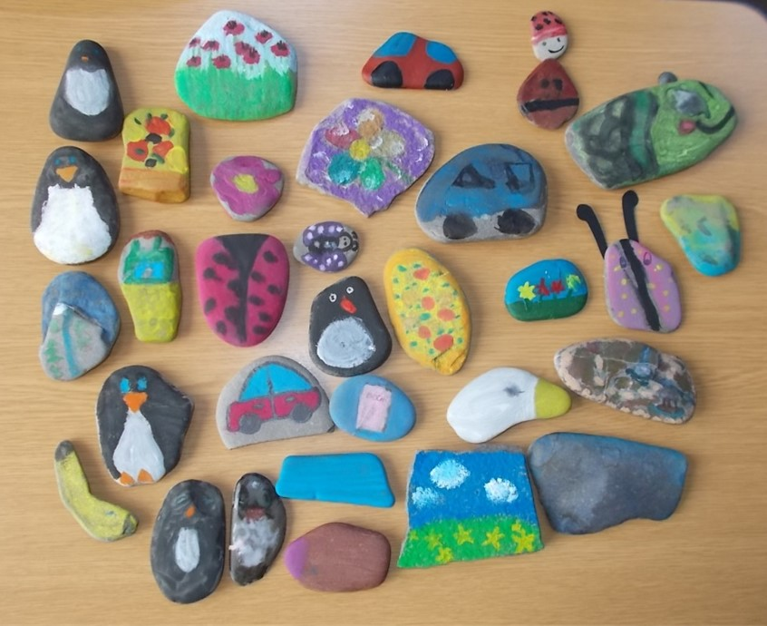
Ar fi ideal să avem în fiecare an școlar un proiect educațional școală- familie, în care să
colaborăm permanent cu membrii familiei. Mai ales, în clasa pregătitoare, deoarece la grădiniță
educatoarele fac o grămadă de lucruri interesante, haioase, creative împreună cu părinții copilașilor.
Unele activități nu necesită mult efort (nici fizic, nici financiar). Pietrele se pot culege chiar
și din jurul blocului. Important este să dăm instrucțiuni concrete elevilor noștri, să nu li se
pară complicat. Restul vine din creativitatea fiecăruia.
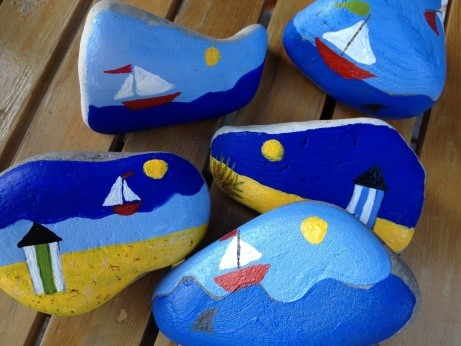
PIETRE DECORATIVE DIN CREIOANE CERATE
Avem nevoie de:
Câteva pietre cât mai plate
Resturi de creioane cerate
Un cuptor încins
…și chef de creație!
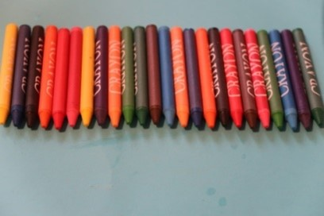
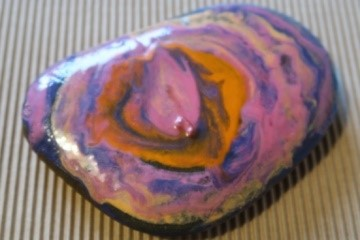
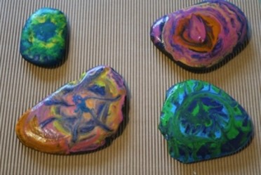
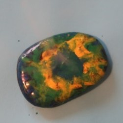
Alege câteva pietre plate, cu dimensiuni relativ mari. Acoperă o tavă cu staniol pentru a
preveni zgârierea, așează pietrele pe staniol și bagă-le în cuptor la 350 de grade timp de
15 minute. Între timp, pregătește cât mai multe creioane cerate, în culori diferite.
Odată pietrele scoase din cuptor, manevrează-le doar cu mănușa, căci sunt foarte fierbinți.
Desenează pe ele modelele dorite; la contactul cu piatră fierbinte, creioanele colorate cerate
se vor topi, culorile se vor îmbina și vor forma modele abstracte spectaculoase.
Odată răcite, culorile se vor întări și vor forma o peliculă rezistentă pe suprafața pietrelor.
Acestea pot fi folosite ca suporturi pentru lumânări sau ca elemente decorative în ghivece, în
grădină, pe balcon, pe pervaz.
Sursă: miculrinocer.ro
COLIER CU MEDALION PIATRĂ
Colierul confecționat de mânuțe de copil reprezintă cadoul perfect pentru o mămică fericită.
Iar dacă acesta este așezat într-o cutiuță de bijuterii elegantă, confecționată tot de copil,
are o valoare neestimată față de orice lănțișor de aur.
Ai nevoie de:
Pietre mici
Adeziv cu sclipici în diferite culori (culori strălucitoare, culori metalice și culori sidef)
Sârmă subțire și ușoară
Un șnur
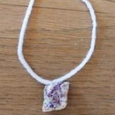
Așa vei proceda:
Spală pietrele și lasă-le să se usuce. Dacă dorești să folosești mai multe culori naturale,
vopsește în primul rând piatra cu un adeziv special (lipici/ lac pentru tehnica șervețelului),
astfel încât să strălucească frumos.
Alege apoi sclipici colorat (glitter) de o culoare sau două.
Observă fiecare parte a pietrei și decide care va fi partea din față. Apoi, așază piatra
cu fața în sus pe hârtie cerată.
Pictează întreaga față a pietrei cu sclipici. (Sfat: Poți pune sclipici pe o farfurie de
hârtie și colorezi pietrele cu lipiciul folosind bețișoare de urechi.)
Atâta timp cât prima culoare este încă umedă, se va picta piatra cu a doua culoare. Pune
piatra să se usuce peste noapte. Pentru a transforma piatra într-un medalion, înfășoară
piatra cu o sârmă ușoară și subțire. Folosește aceeași tehnică pe care o utilizezi atunci
când împachetezi un pachet cu panglică.
Folosește o furculiță pentru a ridica sârma ca să introduci șnurul.
Taie șnurul la lungimea potrivită și leagă capetele.
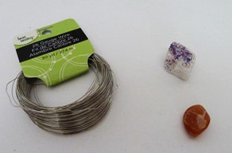
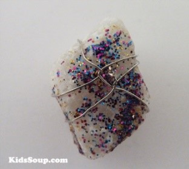
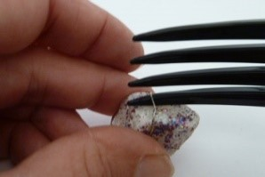
Mămica ta va fi fericită să poarte un obiect care să-i amintească de puiul ei! Este un
cadou frumos și elegant care va completa frumusețea ei.
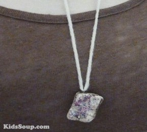
Sursă: kindersuppe.de
Ce este un litofon?
Un litofon este un instrument muzical format dintr-un rock sau piese de rock care sunt lovite
pentru a produce note muzicale. Notele pot suna în combinație (producând armonie) sau succesiv
(melodie). Litofonul este un idiofon similar cu barele de pe instrumente precum glockenspiel,
metalofon, xilofon și marimba.
În sistemul de clasificare Hornbostel-Sachs, litofonii sunt desemnați drept „111.22” -
plăci de percuție lovite direct.
Exemple notabile:
O formă rudimentară a litofonului este „rock gong-ul”, de obicei o formațiune naturală de
rock adaptată oportunist pentru a produce tonuri muzicale, precum cea de pe insula Mfangano,
din Lacul Victoria, Kenya.
The Great Stalacpipe Organ of Luray Caverns, Virginia,SUA folosește 37 de stalactite pentru
a produce scara occidentală . Un alt litofon de stalactită se găsește la Tenkasi, în India
de Sud. Ringing Rocks Park din Pennsylvania este un alt litofon bine cunoscut.
Un instrument basc tipic numit Txalaparta (sau Chalaparta) poate fi din lemn sau piatră,
dar este tradițional din lemn.
Probabile pietre preistorice litofonice au fost găsite la Sankarjang în Odisha, India.
Litofoanele vietnameze care datează din cele mai vechi timpuri, numite đàn đá , au fost
descoperite și reînviate în secolul XX.
Muzica rituală din Coreea prezintă utilizarea cimilor de piatră numite pyeongyeong,
derivate din bianqing-ul chinezesc.
La Pietrele muzicale de Skiddaw din Cumbria, Anglia, au fost făcute într-un instrument
de găsit în Muzeul Keswick și Galeria de Artă.
Un litofon numit Musical Stones a fost creat la Brantwood, fosta casă a lui John Ruskin din
Cumbria, Anglia, și poate fi jucat acolo de către vizitatori.
Silex pian, circa 1885 angajate cremene suspendate de diferite dimensiuni, care au fost
bătute cu alte cremene pentru a produce sunete.
Compozitorul-vibrafonist Wolfgang Lackerschmid folosește un instrument numit gramorimba,
care este prezentat alături de vibraphone și marimba într-un decor de trio.
Trupa islandeză post-rock Sigur Rós a interpretat o marimba de ardezie, pe care sculptorul
Páll Guðmundsson a construit-o din roci găsite în Islanda; acest lucru este demonstrat în
DVD-ul lor Heima.
Marimba de piatră
Hōkyō , un lithophone inventat în Japonia, a fost făcută din bare de sanukite.
Compozitorul german Carl Orff cere un litofon numit Steinspiel în lucrările sale ulterioare.
Unele litofone includ pickup-uri electrice pentru a amplifica sunetele.
Anticii indieni au folosit litofonul artificial, ca element arhitectural. Templele precum
templul Nellaiyappar (secolul al VIII-lea) din Tirunelveli, templul Vijaya Vitthala (secolul
al XV-lea) din Hampi, templul Madurai Meenakshi (secolul al XVI-lea) și templul Suchindram
Thanumalayan (secolul al XVII-lea) au piloni muzicali.
Marimba de piatră
O marimba de piatră este configurată în aceeași manieră ca cea mai tipică marimba din lemn.
Barele sunt de obicei largi ca o marimba din lemn, dar sunt mai subțiri și plate, ceea ce
ajută la creșterea rezonanței. Marimba de piatră poate avea sau nu rezonanți.
O marimba de piatră adăpostită la Musée de l’Homme este posibil cel mai vechi instrument
muzical cunoscut de pe planetă.
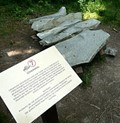
Litofon din fonolit în grădina botanică din Schellerhau (Germania)
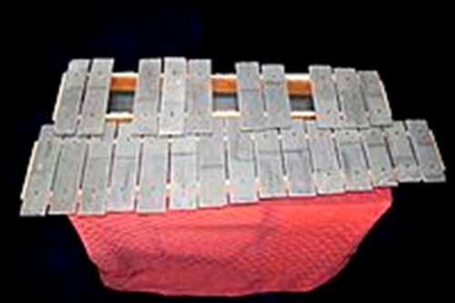
Marimba de piatră , gama C3 – C5
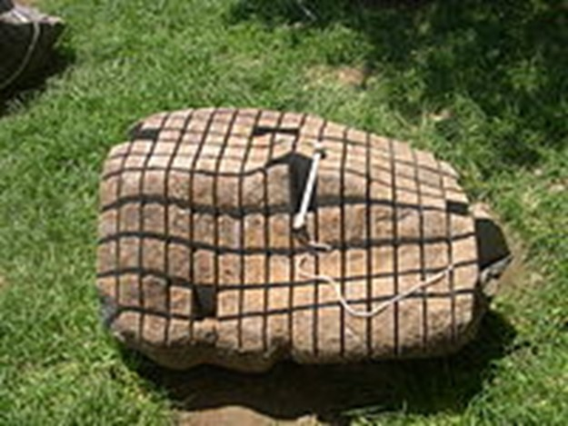
Xilofon din piatră
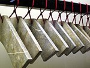
Cheile de piatră, Muzeul Provincial Shandong, Jinan